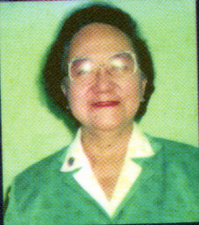
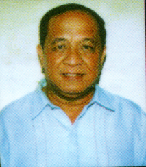

Rosario S. Abrenica
Chair,LCCA

Ernesto N. Jalbuena
Executive Secretary, LCCA
LUCENA CITY COUNCIL FOR CULTURE AND ARTS
The Lucena City Council for Culture and Arts(LCCA) is born out of the local governnment's manifest political will which provides for the creation of the council through the passage of a city ordinance. Mandated by a law as catalyst for culture and arts development in Lucena, the council is propelled by its strong members who come from a multi-sectoral representation. Mostly driven by their enthusiasm in the arts, the council's leadership and management of cultural program is one that reflect a consultative and highly participatory approach. With the assistance of the CPP's Cultural Exchange Division Organizational Development Unit, The group has succesfully laid out long term strategic plans premised on their visions as a "prime mover for the revival, preservation, propagation and appreciation of culture and the arts, of, for and by Lucenahins (a popular term used to refer to a native in Lucena)." Wielded by their strong commitment to the arts, the group believed in their mission to "preserve and promote its culture and artistic heritage. to raise the level of public awareness and appreciation of Lucena's culture and the arts. and to instill a sense of pride in being Lucenahin through sustainable projects and services"
The present chair is Mrs. Rosario Abrenica and the executive secretary is Mr. Ernesto N. Jalbuena.
The definitive History of Lucena City is one of the projects of the Lucena City Council for Culture and the Arts (LCCA) with the Quezon Province Historical Society chaired by his Excellency Bishop Ruben T. Profugo as co-sponsor.
A DEFINITIVE HISTORY OF LUCENA CITY (1879-2000) Cesar A. Villariba


MUSEO DE LUCENA
Established by the Lucena Council for Culture and the Arts(LCCA) and City Government of Lucena based on a
Memorandum issued by City
Mayor Bernard G. Tagarao on July 1 1990 to be the depository of important collections, relics,artifacts,valuable writings,documents, etc.., that best depict the historical, cultural and arts heritage of Lucena.
LCCA was Created Under Sp Ordinance No.1734 Series of 1997 ,and its composition was reconstituted under Executive Order No. 049-98 dated November 3, 1998
Inaugurated on August 17, 1999 by Chairman Jaime C. Layaof the National Commision on Culture and The Arts
COUNCIL BOARD 1998-2001
Ex-Officio Chairman
Ex-officio Vice-Chairman
Chairperson
Vice-Chair,Administration
Vice-Chair, Operation
Secretary-General
- City Mayor Bernard G. Tagarao
- City Vice-Mayor Raymundo M. Andormeo
- Rosario S. Abrenica
- Lilia T. Reyes (up to June 15, 1999)
- Melba T. Dayao (Effective June 16,1999)
- Chuchay C.Marasigan
- City Sec. Ernesto N. Jalbuena
Trustees:
Imelda O. Abadilla
Thelma M. Alana
Eva D. Arcos (up to July 16, 1999)
Benjamin D. Aranas (Effective July 19, 1999)
Amelita O Balagtas
Wilfredo P. Barron
Jaime M. Buzar
Edgardo Z. Dalida
Solomo S. Deto
Asuncion L Flores
Aurora C. Garcia
Ofelia S. Garcia
Ramon L. Lagos
Luz C. Obmina
Flordeliz B. Reyes
Venmar V. Ruanto
Romando Franco C. Talaga
Ben Urlanda
Cesar A. Villariba
Benilda N. Villenas
Bro. Willy Zoleta